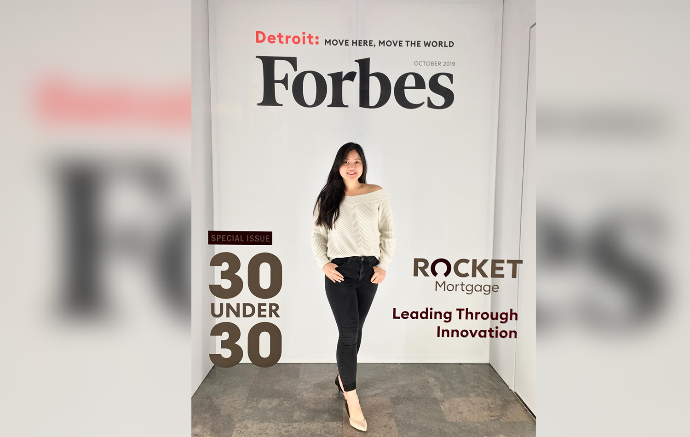

My biggest takeaway from the 2019 Forbes Under 30 summit: your career is a marathon, not a sprint.
-
In August, I was working a full-time internship and two part-time jobs to make ends meet and to fund my personal goals.
-
In September, I traveled to Taiwan and Vietnam for 3 weeks while also working part-time and building my personal freelance graphic design business.
-
In October, I completed my goal of solo traveling (to New York) before 20, went to a Marketing Conference, and attended the Forbes Under 30 Summit with a scholarship while still being a full time student.
The past few months have been an amazing whirlwind! And, the biggest part, I’m honestly and completely burnt out.
I never truly understood nor believed the phrase “your career is a marathon, not a sprint” until now. I’m a first-generation student from a low socio-economic class. I’ve always been a hard worker, following in the footsteps of my parents. And now, after the summit, I realized my drive is also partially because of a constant fear of not being able to escape my circumstances. It’s the mentality of “if I don’t give 150% at all times, I’ll fail”. But, that’s not true!
At the Forbes conference, I met individuals with same Type A personality. They were incredible, finishing engineering PhDs in 3 years and turning side hustles into million-dollar start-ups. From a high-level view, they were extraordinary and gifted trailblazers. From a low-level and day-by-day view, there plagued with intense lows of burn out and stress because they were also running from the same fears that I was running from.
The underlying theme of the conference and my key takeaway was to work hard but don't stretch yourself thin because it's not worth it in the end. There is a fine line between passion and overexertion. Passion keeps us moving forward while overexertion slowly breaks us down. It wasn't until this conference that I truly understood that.
I know this was a personal story, but I wanted to share this because… to whoever, is experiencing burn out from running away from their fears (especially with the stress of internship recruitment season at its peak), know that you are not alone and that you will be okay.
It’s okay to stop sprinting and start walking to succeed in the marathon that is your career.